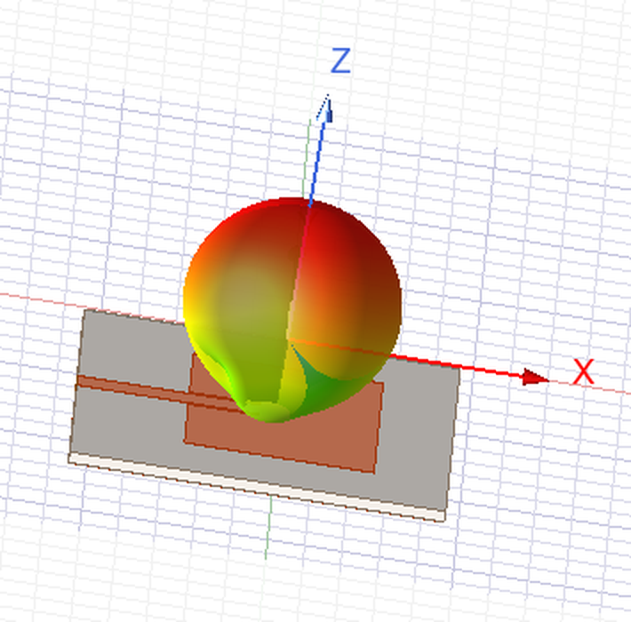
September 3, 2026
Project Sections
- 1. Design Objective
- 2. Antenna Theory and Initial Design
- 3. HFSS Model and Initial Full-Wave Simulation
- 4. Resonant Frequency Optimization
- 5. Feed Position and Impedance Matching
- 6. Final Input Performance
- 7. Surface Current and Field Distribution
- 8. Far-Field Radiation Performance
- 9. Analytical and Full-Wave Design Comparison
- 10. Final Design Summary
- 11. Conclusion and Future Work
1. Design Objective
The objective of this project is to design and analyze a rectangular microstrip patch antenna operating at a center frequency of 3 GHz. The antenna is designed for a 50 Ω input impedance and uses an inset-fed microstrip transmission line to provide direct impedance matching between the feed line and the radiating patch.
The initial patch dimensions are determined analytically using the transmission-line model of a rectangular microstrip antenna. These dimensions are then implemented in Ansys HFSS, where the geometry is refined through full-wave electromagnetic simulation. Patch length is adjusted to place the resonant frequency accurately, while feed position is studied to obtain the desired 50 Ω input match.
The final design is evaluated in terms of reflection coefficient, input impedance, impedance bandwidth, realized gain, radiation efficiency, and far-field radiation pattern. Surface-current and electromagnetic-field distributions are also examined to verify the expected resonant behavior of the patch.
2. Antenna Theory and Initial Design
A rectangular microstrip patch antenna consists of a conductive radiating patch separated from a ground plane by a dielectric substrate. The patch behaves approximately as a half-wavelength resonator, with radiation occurring primarily due to the fringing electric fields at the two open edges of the patch.
For the fundamental \(TM_{10}\) mode, the electric-field distribution varies mainly along the patch length. The effective electrical length is therefore approximately one-half of the guided wavelength:
where
and
The antenna is designed for \(f_0=3\ \mathrm{GHz}\) using Rogers RO4350B with \(\epsilon_r=3.48\) and substrate thickness \(h=1.52\ \mathrm{mm}\).
2.1 Initial Patch Width
The initial patch width is estimated using
This expression is based on the half-wavelength behavior of the patch, modified to account for dielectric loading. The width is chosen to provide suitable radiation conductance and efficiency for the dominant mode.
Using \(c\approx3\times10^8\ \mathrm{m/s}\),
which gives
2.2 Effective Dielectric Constant
The electromagnetic fields of a microstrip structure are not confined entirely within the dielectric substrate. Part of the field exists within the substrate, while part extends into the surrounding air. The propagating wave therefore experiences an effective dielectric constant satisfying
A commonly used approximation is
This relation comes from quasi-TEM microstrip transmission-line models and approximates the effect of electromagnetic-field energy being distributed between the dielectric and air. Substituting the selected parameters gives
2.3 Fringing-Field Correction
The patch does not behave as an ideal cavity with perfectly confined fields. At the two open ends, the electric field extends beyond the physical conductor, making the patch appear electrically longer than its physical length.
The additional effective length at each end is approximated by
This is a semi-empirical microstrip approximation rather than a direct closed-form solution of Maxwell's equations. For the selected geometry,
2.4 Patch Length
Ignoring fringing fields, the resonant length would approximately correspond to one-half of the guided wavelength:
Using the calculated effective dielectric constant,
Because fringing fields extend the electrical length by approximately \(\Delta L\) at each end,
and therefore
| Parameter | Initial Value |
|---|---|
| Target frequency, \(f_0\) | 3.00 GHz |
| Relative permittivity, \(\epsilon_r\) | 3.48 |
| Substrate thickness, \(h\) | 1.52 mm |
| Effective dielectric constant, \(\epsilon_{\text{eff}}\) | 3.237 |
| Patch width, \(W\) | 33.4 mm |
| Effective patch length, \(L_{\text{eff}}\) | 27.77 mm |
| Fringing extension, \(\Delta L\) | 0.726 mm |
| Physical patch length, \(L\) | 26.32 mm |
These values provide an analytical starting point rather than final antenna dimensions. Full-wave simulation is used to determine the actual resonant frequency and refine the physical geometry.
3. HFSS Model and Initial Full-Wave Simulation
The analytically calculated patch dimensions were transferred to Ansys HFSS for full-wave electromagnetic simulation. The purpose of the initial model was to evaluate how closely the closed-form design equations predicted the behavior of the complete physical antenna before numerical optimization.
The antenna was modeled as an inset-fed rectangular copper patch fabricated on Rogers RO4350B. The initial analytical dimensions were retained without modification:
The substrate parameters were \(\epsilon_r=3.48\), \(\tan\delta=0.0037\), and \(h=1.52\ \mathrm{mm}\). A copper thickness of \(t_{\text{Cu}}=0.035\ \mathrm{mm}\) was used for both the patch/feed conductor and ground plane.
3.1 Inset-Fed Geometry
The patch was excited using a 50 Ω microstrip feed line extending from the edge of the substrate into a rectangular inset cut into the radiating patch. The initial feed width was \(W_f=3.48\ \mathrm{mm}\), corresponding approximately to a 50 Ω microstrip line on the selected substrate. An initial inset depth of \(L_{\text{inset}}=9.50\ \mathrm{mm}\) was used, with \(G_{\text{notch}}=0.50\ \mathrm{mm}\) clearance between each side of the feed line and the surrounding patch conductor.
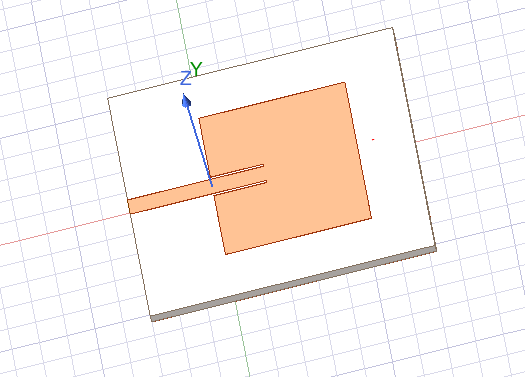
3.2 Excitation and Boundary Conditions
The antenna was excited using a 50 Ω lumped port positioned at the outer end of the microstrip feed. The port sheet extended vertically between the feed conductor and ground plane, with the integration line directed from ground toward the signal conductor.
The antenna was surrounded by an air region terminated with a radiation boundary. The boundary spacing was selected as approximately one-quarter of the free-space wavelength at the design frequency:
At 3 GHz, \(\lambda_0\approx100\ \mathrm{mm}\), giving \(d_{\text{rad}}\approx25\ \mathrm{mm}\).
3.3 Simulation Setup
The HFSS solution was configured using the Driven Modal solver with an adaptive solution frequency of \(f_{\text{adapt}}=3\ \mathrm{GHz}\). The adaptive convergence criterion was \(\Delta S_{\max}=0.02\), with a maximum of 15 adaptive passes and two converged passes required. The reflection coefficient was evaluated over 2–4 GHz, and an infinite-sphere far-field setup was included for later gain and radiation-pattern extraction.
3.4 Initial Simulation Result
The first simulation used the analytical dimensions and initial inset-feed geometry without full-wave tuning.
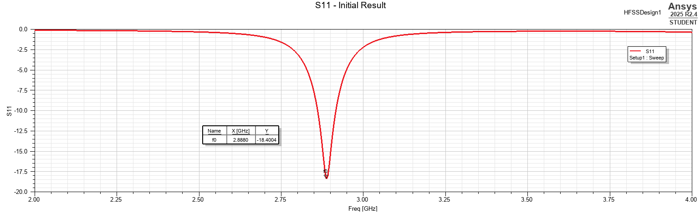
The initial resonance occurred at
with
The resonance was therefore 112 MHz below the intended 3 GHz operating frequency, corresponding to an error of approximately 3.7%. The result indicated that the full-wave antenna was electrically longer than required, motivating a controlled patch-length sweep.
4. Resonant Frequency Optimization
For the dominant \(TM_{10}\) mode, resonant frequency is primarily controlled by the electrical length of the patch:
Because the initial resonance occurred below 3 GHz, a parametric sweep of \(L_p\) was performed while substrate, feed width, inset depth, and all other dimensions were held constant.
4.1 Patch-Length Sweep
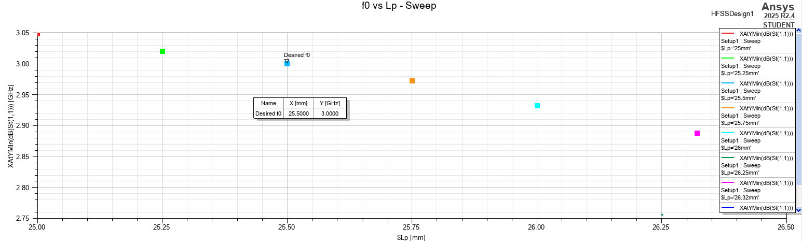
The sweep identified \(L_p=25.50\ \mathrm{mm}\) as the geometry that places the resonance at \(3.000\ \mathrm{GHz}\). Compared with the analytical starting value, the required adjustment was
or approximately
of the analytical length.
4.2 Verification of the Optimized Patch Length
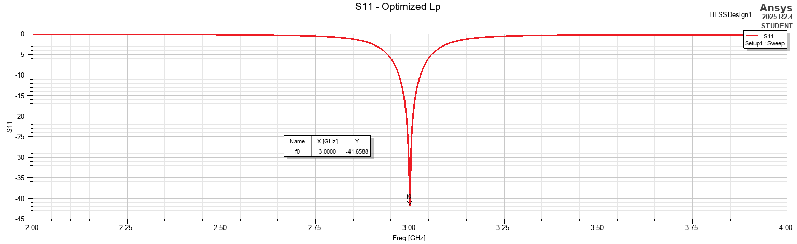
The optimized geometry produced
Changing patch length also improved the input match substantially. Although patch length primarily controls resonance, geometry and feed impedance are coupled; in this case the corrected resonant length also placed the existing inset feed very close to its optimum matching condition.
5. Feed Position and Impedance Matching
With \(L_p=25.50\ \mathrm{mm}\) fixed, the inset depth was swept from 7.5 mm to 11.5 mm in 0.5 mm increments. No further optimization was strictly required—the existing 9.5 mm inset already produced an excellent match—but the sweep was used as a sensitivity study to show how feed location controls the input impedance.
5.1 Effect of Inset Depth on Reflection Coefficient
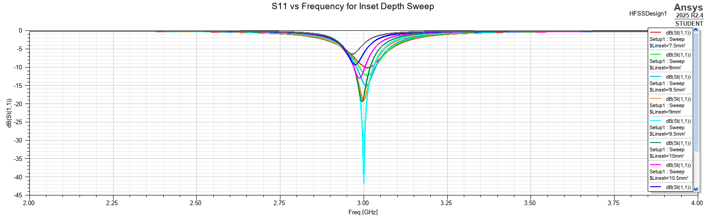
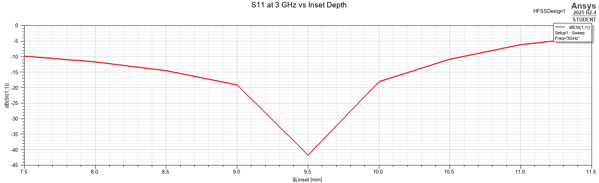
The strongest matching condition occurs at
5.2 Input-Impedance Variation
For a 50 Ω source, the desired antenna impedance at the design frequency is \(Z_{\text{in}}\approx50+j0\ \Omega\).
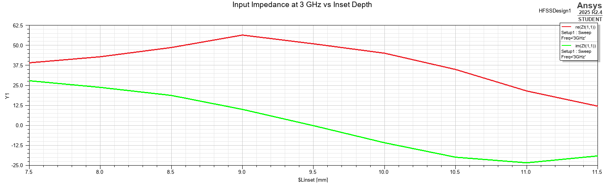
Near \(L_{\text{inset}}=9.5\ \mathrm{mm}\), the real component approaches 50 Ω while the reactive component approaches zero. This directly explains the deep \(S_{11}\) minimum and demonstrates the inset feed as an impedance-matching mechanism.
5.3 Coupling Between Feed Position and Resonant Frequency
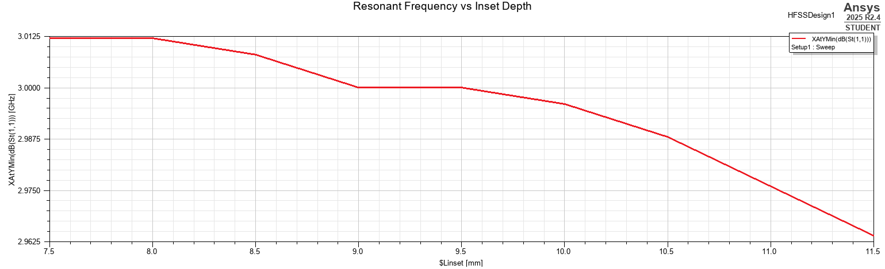
Across the sweep, resonance shifts only from roughly 3.013 GHz to 2.963 GHz—about 50 MHz or 1.7% of the design frequency—while the matching response changes much more strongly. The result supports the practical interpretation that patch length primarily controls resonance and inset depth primarily controls matching, while also showing that the two effects are not perfectly independent.
6. Final Input Performance
Following the patch-length and inset-depth studies, the final geometry was evaluated in terms of reflection coefficient, impedance bandwidth, Smith-chart response, input impedance, and VSWR.
6.1 Reflection Coefficient and Impedance Bandwidth
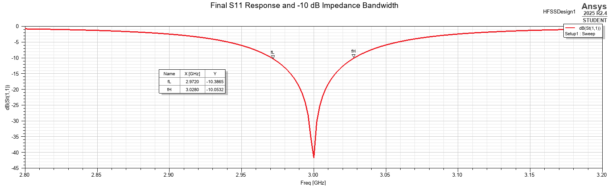
The −10 dB crossings are \(f_L=2.972\ \mathrm{GHz}\) and \(f_H=3.028\ \mathrm{GHz}\). Therefore,
and
6.2 Smith-Chart Response
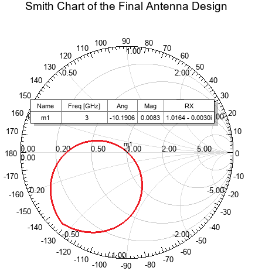
At 3 GHz, the normalized impedance is approximately \(z_{\text{in}}=1.0164-j0.0030\). With 50 Ω normalization,
6.3 Input Impedance
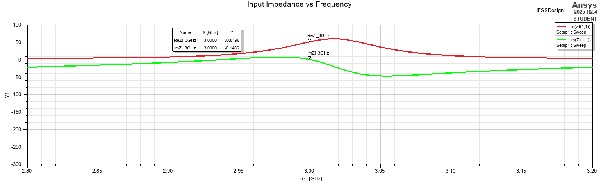
At the design frequency, HFSS gives
6.4 Voltage Standing Wave Ratio
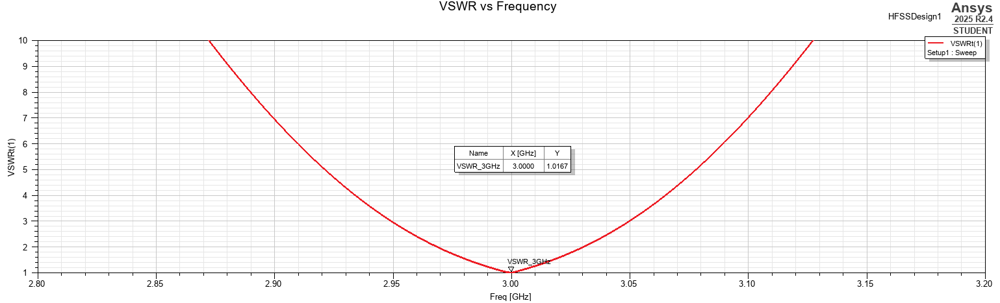
At 3 GHz,
| Metric | Final Result |
|---|---|
| Resonant frequency | 3.000 GHz |
| Minimum \(S_{11}\) | −41.66 dB |
| Lower −10 dB frequency | 2.972 GHz |
| Upper −10 dB frequency | 3.028 GHz |
| −10 dB bandwidth | 56 MHz |
| Fractional bandwidth | 1.87% |
| Input impedance at 3 GHz | \(50.82-j0.15\ \Omega\) |
| VSWR at 3 GHz | 1.0167 |
7. Surface Current and Field Distribution
The input-response results confirm that the antenna is resonant and well matched at 3 GHz, but S-parameters alone do not show how electromagnetic fields are distributed across the structure. Surface current and electric field were therefore examined at the design frequency to verify the expected patch behavior.
7.1 Surface Current Distribution
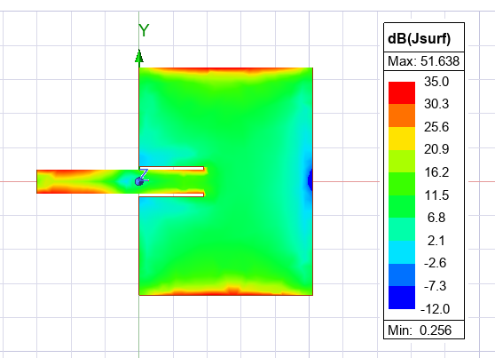
Strong current is visible along the microstrip feed and around the inset transition, where power transfers into the radiating patch. The current then spreads over the patch and forms the distributed pattern associated with the resonant antenna mode. Localized edge currents dominate the absolute maximum, while the broader current distribution illustrates the standing-wave nature of the structure.
7.2 Electric Field Magnitude
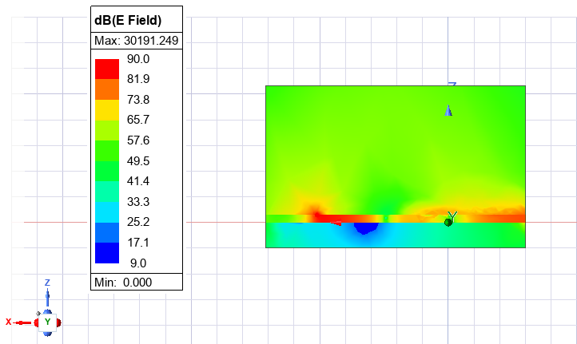
Strong fields occur near the feed/inset discontinuity and the open regions of the resonant patch. A significant portion of the field extends into the air rather than remaining confined to the dielectric; this fringing-field behavior is the mechanism responsible for radiation from the microstrip patch.
7.3 Electric Field Direction
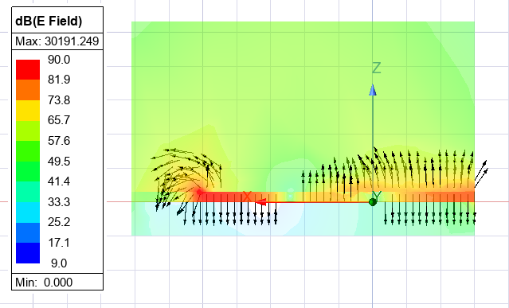
The vector representation shows the instantaneous field direction at the selected phase. Within the microstrip structure, the field couples between patch and ground; near open patch regions, the vectors bend outward into air. A 180° phase shift would reverse the displayed vector directions without changing the field-magnitude distribution or radiation behavior.
7.4 Verification of Resonant Patch Behavior
Taken together, the current and field results show current delivery through the inset-fed line, distributed resonant current across the patch, field coupling to the ground plane, and fringing fields extending into air. These characteristics are consistent with operation in the intended fundamental \(TM_{10}\)-type mode and confirm that the 3 GHz port resonance corresponds to the expected physical antenna behavior.
8. Far-Field Radiation Performance
After verifying the input match and near-field behavior, the far-field radiation characteristics were evaluated at 3 GHz. Realized gain was used as the primary radiation metric because it includes both antenna loss and input mismatch:
Because \(S_{11}\approx-41.7\ \mathrm{dB}\) at 3 GHz, mismatch loss is negligible and realized gain is almost identical to conventional gain.
8.1 Three-Dimensional Radiation Pattern
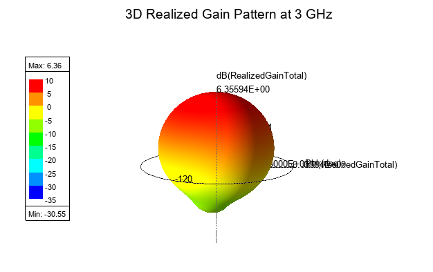
The dominant radiation is directed normal to the patch along approximately +Z, giving the expected broadside pattern. The maximum realized gain is
Back radiation is substantially lower because of the ground plane, though finite substrate and ground dimensions allow a smaller rear lobe.
8.2 E-Plane Radiation Pattern
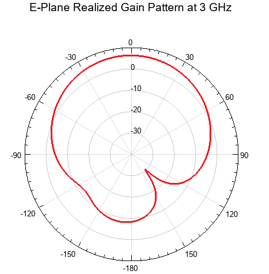
The E-plane pattern exhibits a broad main lobe centered approximately at \(\theta=0^\circ\), corresponding to radiation normal to the patch surface. Forward/backward asymmetry is expected because the complete model includes the inset feed and finite substrate and ground plane.
8.3 H-Plane Radiation Pattern
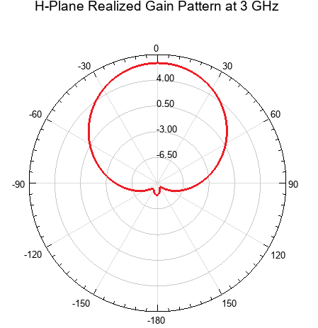
The orthogonal H-plane cut also shows a broad main beam along +Z. The E- and H-plane shapes differ because the patch dimensions and field distributions differ along their two principal axes.
8.4 Directivity, Gain, and Realized Gain
Directivity and gain were extracted from the HFSS far-field solution associated with Infinite Sphere1 at 3 GHz. For directivity, a report used the total-directivity quantity DirTotal with the expression max(dB(DirTotal)). The maximum was evaluated over elevation angle \(\theta\) for each azimuth \(\phi\), and the global maximum was identified using an HFSS marker.
This produced
with a more precise value of 7.0423 dBi.
The same method was used for conventional gain, replacing DirTotal with GainTotal and evaluating max(dB(GainTotal)). The peak gain was
or 6.3564 dBi. The realized-gain maximum was extracted from dB(RealizedGainTotal) in the 3D pattern, giving 6.3559 dBi.
The difference between gain and realized gain is below 0.001 dB, so input mismatch contributes essentially no additional loss at 3 GHz. The approximately 0.68 dB difference between directivity and gain results primarily from conductor and dielectric losses.
8.5 Radiation and Total Efficiency
Radiation and total efficiency were extracted directly from HFSS Antenna Parameters at 3 GHz. RadiationEfficiency and TotalEfficiency are dimensionless ratios, so the report expressions 100*RadiationEfficiency and 100*TotalEfficiency were used to display percentage values.
HFSS reported
As a consistency check, radiation efficiency can also be computed from gain and directivity:
which agrees closely with the HFSS value. Total efficiency includes mismatch loss:
| Metric | Result |
|---|---|
| Operating frequency | 3.000 GHz |
| Peak directivity | 7.04 dBi |
| Peak gain | 6.36 dBi |
| Peak realized gain | 6.36 dBi |
| Radiation efficiency | 85.39% |
| Total efficiency | 85.38% |
| Primary radiation direction | Broadside, approximately +Z |
9. Analytical and Full-Wave Design Comparison
The final stage compares the initial closed-form dimensions with the geometry obtained after full-wave tuning. The analytical design produced \(W_p=33.40\ \mathrm{mm}\) and \(L_p=26.32\ \mathrm{mm}\). The final HFSS patch length was \(25.50\ \mathrm{mm}\), a correction of
or approximately
The initial full-wave resonance was 2.888 GHz, 3.73% below target. After the 3.1% reduction in physical patch length, resonance shifted to 3.000 GHz, consistent with the approximate relationship \(f_r\propto1/L_{\text{eff}}\).
9.1 Initial and Final Reflection Response
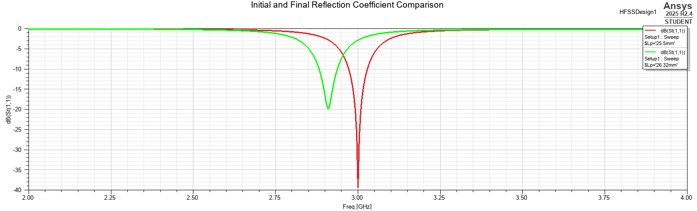
The final antenna reaches \(S_{11}(3\ \mathrm{GHz})\approx-41.66\ \mathrm{dB}\), compared with approximately −18.4 dB for the analytical starting geometry at its original resonance. The feed-position study subsequently confirmed that the original 9.5 mm inset was already close to the optimum matching location.
9.2 Analytical and Final Design Summary
| Parameter | Analytical / Initial Design | Final HFSS Design | Change |
|---|---|---|---|
| Patch width \(W_p\) | 33.40 mm | 33.40 mm | 0% |
| Patch length \(L_p\) | 26.32 mm | 25.50 mm | −3.12% |
| Inset depth \(L_{\text{inset}}\) | 9.50 mm | 9.50 mm | 0% |
| Resonant frequency | 2.888 GHz | 3.000 GHz | +112 MHz |
| Minimum \(S_{11}\) | −18.4 dB | −41.66 dB | Improved |
| Input impedance at 3 GHz | — | \(50.82-j0.15\ \Omega\) | — |
| −10 dB bandwidth | — | 56 MHz | — |
| Peak realized gain | — | 6.36 dBi | — |
| Total efficiency | — | 85.38% | — |
Rather than replacing the analytical model, HFSS refined it. Only a modest geometric correction was required to achieve the final 3 GHz antenna response.
10. Final Design Summary
The completed design combines the analytical synthesis, full-wave tuning, impedance-matching study, near-field inspection, and far-field characterization into one final geometry.
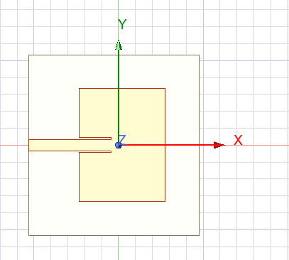
10.1 Final Geometrical Parameters
| Parameter | Final Value |
|---|---|
| Design frequency | 3.000 GHz |
| Substrate | Rogers RO4350B |
| Relative permittivity, \(\epsilon_r\) | 3.48 |
| Loss tangent, \(\tan\delta\) | 0.0037 |
| Substrate thickness, \(h\) | 1.52 mm |
| Copper thickness, \(t_{\text{Cu}}\) | 0.035 mm |
| Patch width, \(W_p\) | 33.40 mm |
| Patch length, \(L_p\) | 25.50 mm |
| Feed width, \(W_f\) | 3.48 mm |
| Inset depth, \(L_{\text{inset}}\) | 9.50 mm |
| Inset side gap, \(G_{\text{notch}}\) | 0.50 mm |
10.2 Final Input Performance
| Metric | Final Result |
|---|---|
| Resonant frequency | 3.000 GHz |
| Minimum \(S_{11}\) | −41.66 dB |
| Input impedance at 3 GHz | \(50.82-j0.15\ \Omega\) |
| VSWR at 3 GHz | 1.0167 |
| Lower −10 dB frequency | 2.972 GHz |
| Upper −10 dB frequency | 3.028 GHz |
| −10 dB bandwidth | 56 MHz |
| Fractional bandwidth | 1.87% |
10.3 Final Radiation Performance
| Metric | Final Result |
|---|---|
| Peak directivity | 7.04 dBi |
| Peak gain | 6.36 dBi |
| Peak realized gain | 6.36 dBi |
| Radiation efficiency | 85.39% |
| Total efficiency | 85.38% |
| Main radiation direction | Broadside, approximately +Z |
10.4 Overall Design Outcome
The final antenna meets the original 3 GHz inset-fed patch objective. The project demonstrates that analytical formulas provide a strong starting point, full-wave EM simulation is needed to refine physical resonant dimensions, patch length is the dominant resonance-tuning variable, inset depth is the dominant impedance-matching variable, near-field inspection verifies the expected current and fringing behavior, and far-field analysis confirms the expected broadside radiation pattern.
11. Conclusion and Future Work
This project developed a 3 GHz rectangular inset-fed microstrip patch antenna from analytical synthesis through full-wave electromagnetic validation in HFSS.
The analytical geometry initially resonated at 2.888 GHz, about 3.7% below the target. Reducing the patch length from 26.32 mm to 25.50 mm shifted the resonance to 3.000 GHz. The final 9.50 mm inset depth produced \(Z_{\text{in}}\approx50.82-j0.15\ \Omega\), \(S_{11}\approx-41.66\ \mathrm{dB}\), and VSWR ≈ 1.017. The final −10 dB impedance bandwidth was 56 MHz, corresponding to 1.87% fractional bandwidth.
Near-field analysis connected the port response to the antenna physics: surface current spread from the inset-fed line into the patch, and electric-field magnitude/vector plots showed the standing-wave and fringing-field behavior associated with radiation. The far-field response exhibited the expected broadside pattern, with 7.04 dBi peak directivity, 6.36 dBi peak realized gain, and 85.38% total efficiency.
Overall, the project demonstrates the complementary roles of analytical antenna theory and full-wave electromagnetic simulation. Closed-form equations provided an effective starting point, while HFSS captured finite geometry, feed discontinuity, material loss, and the full electromagnetic field distribution of the physical antenna.
Future Work
Fabrication and measurement of a physical prototype would provide the most useful next validation step. Measured \(S_{11}\), gain, and radiation patterns could be compared directly with HFSS predictions, including the effects of manufacturing tolerances, connector launches, substrate-property variation, and measurement fixtures.
A tolerance study could quantify the sensitivity of patch length, inset depth, feed width, and substrate thickness. Bandwidth-enhancement techniques—such as thicker or lower-permittivity substrates, stacked patches, slots, parasitic elements, or alternative feeds—could also be explored, together with cross-polarization and front-to-back-ratio characterization.
Finally, the same workflow could be extended to additional antenna types and topologies, including circular patches, slot antennas, monopoles, dipoles, PIFA structures, broadband printed antennas, and eventually antenna arrays. Comparing these designs would broaden the study of how antenna geometry controls impedance, polarization, bandwidth, gain, and radiation pattern while building on the HFSS modeling and post-processing workflow developed here.